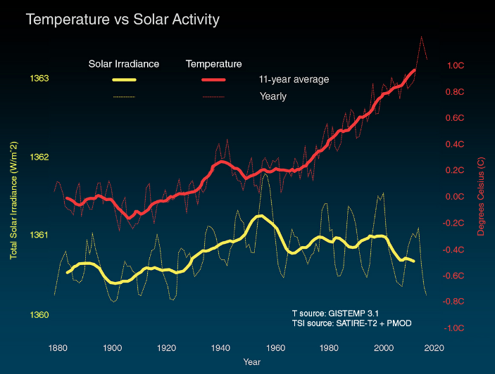

World Overload
Earth
Food Security
Relationships
Safety
Games

Is Climate Change real?
yes! The earth is more than 4.5 billion years old, in the recent 200+ years, climate change has become a problem.

Causes
Even though greenhouse gases occur naturally, after more than a century of industrialization greenhousegases in the atmosphere have broken record levels, which is not as natural The concentration of GHGs in the earth’s atmosphere is directly linked to the average global temperature on Earth.
What we can do
Green your commute! Instead of driving alone or in a gasoline-powered vehicle you can: walk, bike, take public transportation, car pool, or drive an electric vehicle. Transportation takes up 34% of New York's emissions.
Use renewable resources! The cost of utility-scale solar panels has fallen 73% since 2010, for example, making solar energy the cheapest source of electricity for many households in Latin America, Asia and Africa. Other renewable resources include wind power, hydroelectric power, and biomass.
Turn off energy! When not in use, be sure to turn the lights off in all rooms, unplug all outlets, and don't leave the water running.
Educate yourself. Everything you read on social media isn't 100% correct, be sure to use 'google scholar' to fact check and get accurate information. Once you educate yourself, you can educate others and IT DOES MAKE A DIFFERENCE!
Or else...
If we don't take care of earth, it effects us as humans directly. We would be unable to breathe clean air, drink clean water, and eat food that is not contaminiated. We might need to look for a safer planet, that is unknown to the human race. Our kids, the future, can be born with birth defects.